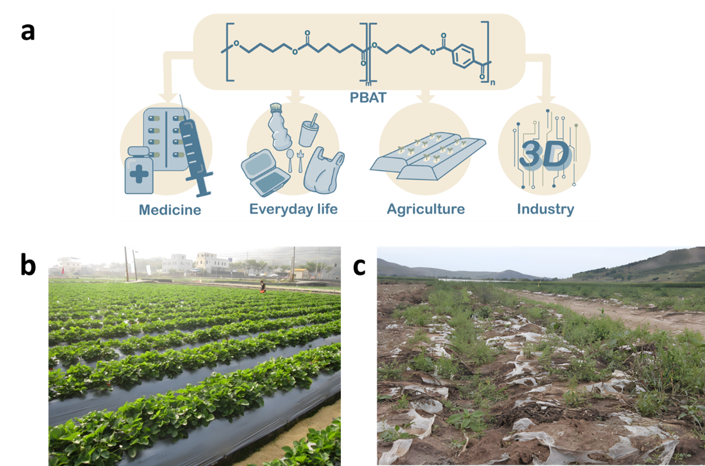
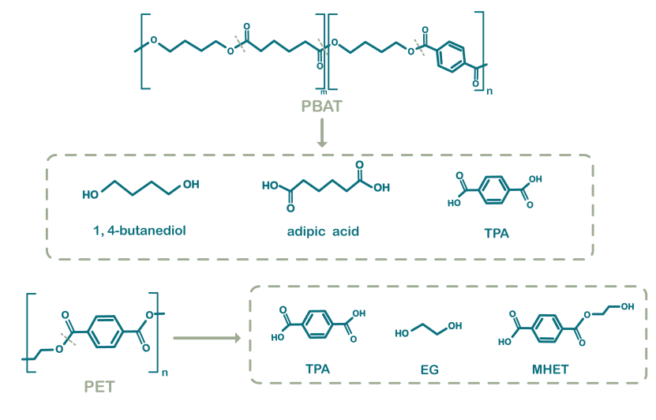

Background
Poly (butylene adipate-co-terephthalate) (PBAT), a polymer synthesized from the monomers terephthalic acid
(TPA),
adipic
acid (AA), and 1,4-butanediol (BDO), has garnered significant attention as a biocompatible and degradable
polymeric
material, exhibiting considerable potential for widespread application in the realm of agricultural film
technology
(Figure 1a)[1-3]. However, owever, the consequences of the growing and hard-to-reverse issue of polyethylene films on our planet are challenging, affecting both the physical environment and living organisms (Figure 1b and c)[4-8].

Figure 1. (a) PBAT has a wide range of applications in various fields. (b) The use of PBAT agricultural film in agriculture. PBAT agricultural film can effectively reduce weeds and pests, regulate soil temperature, improve water retention capacity, reduce soil erosion, and increase crop yields by 20% to 60%.
(c) Abandoned PBAT agricultural film causes large-scale plastic pollution.
Biodegradation of PBAT meets challenges
As an eco-friendly and sustainable strategy to reduce and recycle plastic waste, biodegradable catalysts
using enzymes
or microorganisms meet some challenges. Firstly, the degradation of PBAT yields a mixture of TPA and AA with
distinct
physical and chemical properties (Figure 2). Microorganisms typically encounter carbon catabolite repression
when
confronted with this varied substrate mix, impeding their ability to utilize multiple substrates
simultaneously.
Additionally, PBAT hydrolysis products can be toxic, adversely affecting microbial metabolism and efficient
substrate
assimilation, particularly at high concentrations or with crude hydrolysates[9-11].

Figure 2. Chemical structures of PBAT and PET and respective ester hydrolysis products.
The hydrolysis products of PBAT contain terephthalic acid (TPA), adipic acid (AA) and 1,4-butanediol
(BDO)[3]
.
Biodegradation of PET also produces TPA, suggesting that certain enzymes that degrade PET have the potential
to degrade
PBAT.
Existing PBAT-degrading enzymes and microorganisms typically require high temperatures (50-65℃) for effective
composting
(Table 1) [12]. Jia et al. identified a serine hydrolase enzyme from
Thermobifida fusca FXJ-1 capable of
degrading PBAT
at 55℃, while Wallace et al. utilized proteomics to isolate an esterase from Pseudomonas pseudoalcaligenes
effective at
65℃[13]. Nevertheless, the PBAT decomposition rates of existing
PBAT-degrading enzymes in room temperature
are generally
low, restricting its utilization in the context of agricultural practices[14]. Moreover, Wang et al.
reported that the
degradation rate of PBAT films in conventional agricultural soil was only 2.3% over a three-month
period[15].
Table 1. Enzymes with PBAT degradation developed in recent years
| Enzyme |
Classification |
Source |
Activity (mol/mol)* |
PBAT |
Condition |
Ref. |
Genbank |
| PfL1 |
Lipase |
Pelosinus Fermentans |
~130 |
Film
Milled |
50°C 72h |
[16] |
EIW29778.1 |
| PpEst |
Esterase |
Pseudomonas pseudoalcaligenes |
~8~70 |
Film
Milled |
65°C 72h |
[17] |
W6R2Y2 |
| Cbotu_EstA |
Esterase |
Clostridium Botulinum |
<30 |
Not specified |
50°C 72h |
[17] |
CAL82416.1 |
| Cbotu_EstB |
Esterase |
Clostridium botulinum |
~12 |
Not specified |
37°C 72h |
[17] |
CAL83600.1 |
| TfCut |
Cutinase |
Thermobifida fusca |
5198 |
Film |
70°C 48h |
[3] |
CBY05530 |
| IsPETase |
Cutinase |
Ideonella sakaiensis |
4868 |
Film |
30°C 48h |
[3] |
A0A0K8P6T7 |
| PbPL |
Cutinase |
Polyangium brachysporum |
- |
Film |
30°C 48h |
- |
- |
| BurPL |
Cutinase |
Burkholderiales bacterium |
3208 |
Film |
35°C 48h |
[3] |
- |
| Ple628 |
Hydrolases |
Marine microbial consortium |
121 |
Film |
30°C 144h |
[18] |
OK558824 |
| Ple629 |
Hydrolases |
Marine microbial consortium |
1704 |
Film |
30°C 72h |
[18] |
OK558825 |
| HiC |
Cutinase |
Humicola insolens |
~10,000 |
Film |
50°C 72h |
[17] |
A0A075B5G4 |
| LCC |
Cutinase |
Leaf-branch compost |
4636 |
Film |
70°C 24h |
[3] |
G9BY57.1 |
| ICCG |
Cutinase |
Leaf-branch compost |
5275 |
Film |
75°C 24h |
[3] |
USU85609.1 |
| TcCut |
Cutinase |
Thermobifida cellulolysitica |
5361 |
Film |
65°C 48h |
[3] |
ADV92526.1 |
*The activity is the quantitation of products containing TPA and BTa (mol) per mol enzymes. -
refers
to not find.
Our goal
In this work, we identified three distinct enzyme candidates for targeted evolutionary engineering, with the
objective of developing highly efficient PBAT-degrading enzymes that exhibit optimal catalytic activity
under room temperature conditions. These enzyme candidates include IsPETase, a cutinase derived from
the PET-degrading bacterium Ideonella sakaiensis; BsLipA, a lipase from Bacillus subtilis; and
Lipase1028, which has been newly isolated in our laboratory. IsPETase is capable of degrading PET in
the glassy state at moderate temperatures (30-37°C)[19-22]. BsLipA exhibits
good hydrolytic activity on ester bonds formed by medium-chain fatty acids[23,
24]. Lipase1028 demonstrates significant degradation capabilities for polyurethanes (PU). Based
on the structural similarities between the substrates of these three enzymes and PBAT, we propose that all
three possess considerable evolutionary potential[3, 25].
Furthermore, we also aim to obtain an engineering single strain capable of catabolizing of PBAT-derived
degradation products. Pseudomonas putida has been recognized as a potential host organism for a
diverse range of biotechnological applications, including the metabolic processing of plastics [26, 27]. Wing-Jin Li et al. reported that the wild-type Pseudomonas
putida KT2440 could degrade TPA but at a very slow rate, requiring over 50 hours to degrade 20 mM
substrate[28]. In this study, we transformed the gene cluster tph
derived from Pseudomonas stutzeri TPA3 into KT2440 to enable its degradation of TPA[29, 30]. Then, we performed adaptive laboratory evolution and metabolic
engineering to isolate KT2440 variants capable of utilizing 1,4-butanediol as the sole carbon source.
Ultimately, we will transform the evolved PBAT degradation enzyme genes which are obtained from directed
evolution, into the engineered KT2440 strain, aiming to create a single strain capable of efficiently
degrading PBAT and utilizing its degradation products, thus facilitating sustainable degradation processes
eventually.
Reference
-
[1] A. Kanwal, M. Zhang, F. Sharaf and C. Li, Polymer pollution and its solutions with special emphasis
on
Poly (butylene adipate terephthalate (PBAT)), Polymer Bulletin, 79, 9303-9330, (2022).
DOI: https://doi.org/10.1007/s00289-021-04065-2
-
[2] S. Roy and J.-W. Rhim, Curcumin Incorporated Poly(Butylene Adipate-co-Terephthalate) Film with
Improved
Water Vapor Barrier and Antioxidant Properties, Materials, 13, (2020).
DOI: https://doi.org/10.3390/ma13194369
-
[3] Y. Yang, J. Min, T. Xue, P. Jiang, X. Liu, R. Peng, et al., Complete bio-degradation of
poly(butylene
adipate-co-terephtalate) via engineered cutinases, Nature Communications, 14, (2023).
DOI: https://doi.org/10.1038/s41467-023-37374-3
-
[4] M. C. Rillig, Microplastic in Terrestrial Ecosystems and the Soil?, Environmental Science &
Technology, 46, 6453-6454, (2012).
DOI: https://doi.org/10.1021/es302011r
-
[5] Z. Liu, F. Huang, B. Wang, Z. Li, C. Zhao, R. Ding, et al., Soil respiration in response to biotic
and
abiotic factors under different mulching measures on rain-fed farmland, Soil & Tillage Research,
232, (2023).
DOI: https://doi.org/10.1016/j.still.2023.105749
-
[6] Z. Steinmetz, C. Wollmann, M. Schaefer, C. Buchmann, J. David, J. Troeger, et al., Plastic mulching
in
agriculture. Trading short-term agronomic benefits for long-term soil degradation?, Science of the
Total
Environment, 550, 690-705, (2016).
DOI: https://doi.org/10.1016/j.scitotenv.2016.01.153
-
[7] R. M. Qi, D. L. Jones, Z. Li, Q. Liu and C. R. Yan, Behavior of microplastics and plastic film
residues in
the soil environment: A critical review, Science of the Total Environment, 703,
(2020).
DOI: https://doi.org/10.1016/j.scitotenv.2019.134722
-
[8] D. Brennecke, B. Duarte, F. Paiva, I. Caçador and J. Canning-Clode, Microplastics as vector for
heavy metal
contamination from the marine environment, Estuarine Coastal and Shelf Science, 178,
189-195,
(2016).
DOI: https://doi.org/10.1016/j.ecss.2015.12.003
-
[9] M. N. Kim, B. Y. Lee, I. M. Lee, H. S. Lee and J. S. Yoon, Toxicity and biodegradation of products
from
polyester hydrolysis, Journal of Environmental Science and Health Part a-Toxic/Hazardous Substances &
Environmental Engineering, 36, 447-463, (2001).
DOI: https://doi.org/10.1081/ese-100103475
-
[10] J. F. Pang, M. Y. Zheng, R. Y. Sun, A. Q. Wang, X. D. Wang and T. Zhang, Synthesis of ethylene
glycol and
terephthalic acid from biomass for producing PET, Green Chemistry, 18, 342-359,
(2016).
DOI: https://doi.org/10.1039/c5gc01771h
-
[11] K. Varaprasad, M. Pariguana, G. M. Raghavendra, T. Jayaramudu and E. R. Sadiku, Development of
biodegradable metaloxide/polymer nanocomposite films based on poly-e-caprolactone and terephthalic acid,
Materials Science and Engineering C-Materials for Biological Applications, 70, 85-93,
(2017).
DOI: https://doi.org/10.1016/j.msec.2016.08.053
-
[12] P. Svoboda, M. Dvorackova and D. Svobodova, Influence of biodegradation on crystallization of poly
(butylene
adipate-co-terephthalate), Polymers for Advanced Technologies, 30, 552-562, (2019).
DOI: https://doi.org/10.1002/pat.4491
-
[13] X. Jia, K. Zhao, J. Zhao, C. Lin, H. Zhang, L. Chen, et al., Degradation of poly(butylene
adipate-co-terephthalate) films by Thermobifida fusca FXJ-1 isolated from compost, Journal of
Hazardous
Materials, 441, (2023).
DOI: https://doi.org/10.1016/j.jhazmat.2022.129958
-
[14] A. Chorolque, C. Pozzo Ardizzi, G. Pellejero, G. Aschkar, F. J. García Navarro and R. Jiménez
Ballesta,
Incidence of bacterial diseases associated with irrigation methods on onions (Allium cepa), J
Sci Food
Agric, 98, 5534-5540, (2018).
DOI: https://doi.org/10.1002/jsfa.9101
-
[15] H. Wang, D. F. Wei, A. N. Zheng and H. N. Xiao, Soil burial biodegradation of antimicrobial
biodegradable PBAT
films, Polymer Degradation and Stability, 116, 14-22, (2015).
DOI: https://doi.org/10.1016/j.polymdegradstab.2015.03.007
-
[16] A. Biundo, A. Hromic, T. Pavkov-Keller, K. Gruber, F. Quartinello, K. Haernvall, et al.,
Characterization of a
poly(butylene adipate-co-terephthalate)- hydrolyzing lipase from Pelosinus fermentans, Appl
Microbiol
Biotechnol, 100, 1753-1764, (2016).
DOI: https://doi.org/10.1007/s00253-015-7246-4
-
[17] V. Perz, A. Baumschlager, K. Bleymaier, S. Zitzenbacher, A. Hromic, G. Steinkellner, et al.,
Hydrolysis of
synthetic polyesters by Clostridium botulinum esterases, Biotechnol Bioeng, 113,
1024-34,
(2016).
DOI: https://doi.org/10.1002/bit.25874
-
[18] I. E. Meyer Cifuentes, P. Wu, Y. Zhao, W. Liu, M. Neumann-Schaal, L. Pfaff, et al., Molecular and
Biochemical
Differences of the Tandem and Cold-Adapted PET Hydrolases Ple628 and Ple629, Isolated From a Marine
Microbial
Consortium, Front Bioeng Biotechnol, 10, 930140, (2022).
DOI: https://doi.org/10.3389/fbioe.2022.930140
-
[19] S. Yoshida, K. Hiraga, T. Takehana, I. Taniguchi, H. Yamaji, Y. Maeda, et al., A bacterium that
degrades and
assimilates poly(ethylene terephthalate), Science, 351, 1196-1199, (2016).
DOI: https://doi.org/10.1126/science.aad6359
-
[20] X. Han, W. D. Liu, J. W. Huang, J. T. Ma, Y. Y. Zheng, T. P. Ko, et al., Structural insight into
catalytic
mechanism of PET hydrolase, Nature Communications, 8, (2017).
DOI: https://doi.org/10.1038/s41467-017-02255-z
-
[21] C. C. Chen, X. Han, X. Li, P. C. Jiang, D. Niu, L. X. Ma, et al., General features to enhance
enzymatic
activity of poly(ethylene terephthalate) hydrolysis, Nature Catalysis, 4, 425-430,
(2021).
DOI: https://doi.org/10.1038/s41929-021-00616-y
-
[22] T. Fecker, P. Galaz-Davison, F. Engelberger, Y. Narui, M. Sotomayor, L. P. Parra, et al., Active
Site
Flexibility as a Hallmark for Efficient PET Degradation by I-sakaiensis PETase, Biophysical
Journal,
114, 1302-1312, (2018).
DOI: https://doi.org/10.1016/j.bpj.2018.02.005
-
[23] K. E. Jaeger and T. Eggert, Lipases for biotechnology, Current Opinion in Biotechnology,
13,
390-397, (2002).
DOI: https://doi.org/10.1016/s0958-1669(02)00341-5
-
[24] P. Bracco, N. van Midden, E. Arango, G. Torrelo, V. Ferrario, L. Gardossi, et al., Bacillus
subtilis Lipase
A—Lipase or Esterase?, Catalysts, 10, (2020).
DOI: https://doi.org/10.3390/catal10030308
-
[25] F. Muroi, Y. Tachibana, P. Soulnetohne, K. Yamamoto, T. Mizuno, T. Sakurai, et al.,
Characterization of a
poly(butylene adipate-co-terephthalate) hydrolase from the aerobic mesophilic bacterium Bacillus
pumilus,
Polymer Degradation and Stability, 137, 11-22, (2017).
DOI: https://doi.org/10.1016/j.polymdegradstab.2016.08.053
-
[26] N. Wierckx, M. A. Prieto, P. Pomposiello, V. de Lorenzo, K. O'Connor and L. M. Blank, Plastic waste
as a novel
substrate for industrial biotechnology, Microbial Biotechnology, 8, 900-903, (2015).
DOI: https://doi.org/10.1111/1751-7915.12312
-
[27] R. A. Wilkes and L. Aristilde, Degradation and metabolism of synthetic plastics and associated
products by
Pseudomonas sp.: capabilities and challenges, Journal of Applied Microbiology, 123,
582-593,
(2017).
DOI: https://doi.org/10.1111/jam.13472
-
[28] W. J. Li, T. Narancic, S. T. Kenny, P. J. Niehoff, K. O'Connor, L. M. Blank, et al., Unraveling
1,4-Butanediol
Metabolism in Pseudomonas putida KT2440, Frontiers in Microbiology, 11, (2020).
DOI: https://doi.org/10.3389/fmicb.2020.00382
-
[29] P. Liu, T. Zhang, Y. Zheng, Q. Li, Q. Liang and Q. Qi, Screening and genome analysis of a
Pseudomonas
stutzeri that degrades PET monomer terephthalate, Acta Microbiologica Sinica, 62,
200-212,
(2022).
DOI: https://doi.org/10.13343/j.cnki.wsxb.20210178
-
[30] P. Liu, Y. Zheng, Y. B. Yuan, T. Zhang, Q. B. Li, Q. F. Liang, et al., Valorization of Polyethylene
Terephthalate to Muconic Acid by Engineering Pseudomonas Putida, International Journal of
Molecular
Sciences, 23, (2022).
DOI: https://doi.org/10.3390/ijms231910997


 Home
Home

 Project
Project

 Lab Notebook
Lab Notebook
 Team
Team